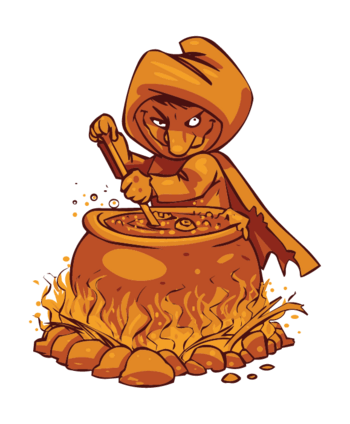

Strange Recipe
Dark Cuisine
Although it is not good to play with food, but how about making a DaRk CuIsInE？
Decoction of Witch

Ingredients:
water
parsley
carrot
cabbage
black pepper
salt
sugar
green pepper
bean sproats
How To Do?
Boil water.
Add pepper, salt and sugar into water and cook for 2 minutes.
Put all the ingredients into water and boil for 1 hour.
Whisper of Hell
Ingredients:
whipping cream
chilli powder
How To Do?
Mix the chilli powder into whipping cream and stir with egg blender.
Pour the mixture into a container.
Put into refrigerator to frozen for at least 5 hours.